Unit 5: Analytical Applications
of Differentiation第 5 单元：导数的分析应用
Move beyond computation to formal reasoning. This unit develops the analytical tools (theorems, tests, and justifications) needed to draw rigorous conclusions about function behavior from derivatives.超越单纯的计算，迈入形式化推理。本单元构建分析工具（定理、判别法与论证），以便从导数严谨地推断函数行为。
Using the Mean Value Theorem运用中值定理
- State the two hypotheses of the Mean Value Theorem and check them for a given $f$ on $[a,b]$.
- Calculate the average rate of change $\frac{f(b)-f(a)}{b-a}$ and solve $f'(c)=\frac{f(b)-f(a)}{b-a}$ for $c$ in $(a,b)$.
- Explain, with a counterexample, why the conclusion can fail when $f$ is not differentiable at one interior point.
- Justify from given function values that a derivative must equal a stated number somewhere in an interval.
- Interpret the guaranteed $c$ in context as an instant when the instantaneous rate equals the average rate.
- 陈述中值定理的两个前提，并针对给定的 $f$ 在 $[a,b]$ 上加以检验。
- 计算平均变化率 $\frac{f(b)-f(a)}{b-a}$，并在 $(a,b)$ 内解方程 $f'(c)=\frac{f(b)-f(a)}{b-a}$ 求 $c$。
- 用反例说明：当 $f$ 在某个内部点不可导时，结论为何可能不成立。
- 由给定的函数值论证：导数必在区间内某处等于指定的数。
- 在情境中解释所保证的 $c$：瞬时变化率等于平均变化率的时刻。
The Mean Value Theorem (MVT) is one of calculus's most powerful existence theorems. It bridges the gap between average behavior and instantaneous behavior, guaranteeing that, for a function meeting its hypotheses, somewhere on an interval the function's instantaneous rate of change matches its average rate of change.中值定理（Mean Value Theorem，MVT）是微积分中最强大的存在性定理之一。它在平均行为与瞬时（instantaneous）行为之间架起桥梁，保证对满足其前提的函数，在某个区间内其瞬时变化率（rate of change）等于平均变化率。
If $f$ is continuous on $[a, b]$ and differentiable on $(a, b)$, then there exists at least one $c$ in $(a, b)$ such that:若 $f$ 在 $[a, b]$ 上连续（continuous）且在 $(a, b)$ 上可导（differentiable），则至少存在一个 $c \in (a, b)$，使得：
In other words, the theorem guarantees the existence of a point where the tangent line is parallel to the secant line connecting $(a, f(a))$ and $(b, f(b))$.换言之，该定理保证存在某点处，切线（tangent line）与连接 $(a, f(a))$ 和 $(b, f(b))$ 的割线（secant line）平行。
secant line）斜率为 2。c = 3 处的切线斜率相同，f′(3) = 2，因此两线平行。在平行切线与曲线的切点正上方，从 x 轴上读出 c。Checking Hypotheses检查前提条件
Before applying the MVT, you must verify both conditions: continuity on the closed interval $[a, b]$ and differentiability on the open interval $(a, b)$. If either condition fails, the conclusion is not guaranteed. Always state explicitly that these conditions are met before drawing a conclusion.应用 MVT 之前，必须验证两个条件：在闭区间 $[a, b]$ 上连续，并在开区间 $(a, b)$ 上可导。若任一条件不成立，结论不再有保证。作结论前应当明确说明这些条件已满足。
A strong MVT justification names the function, confirms continuity and differentiability, computes the average rate of change, and then concludes that there exists a value $c$ with $f'(c)$ equal to that average. Use the theorem's name by name.一份完整的 MVT 论证要点名函数、确认连续性与可导性、计算平均变化率，最后得出结论：存在某 $c$ 使 $f'(c)$ 等于该平均值。务必直接称呼定理名称。
| Learning Objective学习目标 | Essential Knowledge核心知识 |
|---|---|
FUN-1.B Justify conclusions about functions by applying the Mean Value Theorem over an interval.通过在某区间上应用中值定理，论证关于函数的结论。 |
If $f$ is continuous on $[a,b]$ and differentiable on $(a,b)$, then MVT guarantees a point in the open interval where the instantaneous rate of change equals the average rate of change over the interval.若 $f$ 在 $[a,b]$ 上连续且在 $(a,b)$ 上可导，则 MVT 保证开区间内存在一点，使瞬时变化率等于该区间上的平均变化率。 |
Worked Example: Applying the Mean Value Theorem on $f(x)=x^2-4x+1$ over $[1,5]$例题：在 $[1,5]$ 上对 $f(x)=x^2-4x+1$ 应用中值定理
slope）等于割线斜率。Worked Example: A speed the car must reach例题：汽车必定达到的速度
Find every value $c$ guaranteed by the MVT for $f(x)=x^3$ on $[0,3]$.对 $f(x)=x^3$ 在 $[0,3]$ 上，求中值定理保证的所有 $c$。
$f$ is a polynomial, so the hypotheses hold. Average rate: $\frac{27-0}{3-0}=9$. Solve $f'(c)=3c^2=9$, so $c=\pm\sqrt3$. Only $c=\sqrt3\approx1.732$ lies in $(0,3)$.
$f$ 是多项式，前提成立。平均变化率：$\frac{27-0}{3-0}=9$。解 $f'(c)=3c^2=9$，得 $c=\pm\sqrt3$。只有 $c=\sqrt3\approx1.732$ 在 $(0,3)$ 内。
Does the MVT apply to $f(x)=|x|$ on $[-1,1]$? Is there a $c$ where $f'(c)$ equals the average rate of change?中值定理是否适用于 $f(x)=|x|$ 在 $[-1,1]$ 上？是否存在 $c$ 使 $f'(c)$ 等于平均变化率？
The average rate is $\frac{1-1}{1-(-1)}=0$, but $f'(x)=-1$ for $x<0$, $f'(x)=1$ for $x>0$, and $f'(0)$ does not exist. No $c$ works. The MVT does not apply because $f$ is not differentiable at $x=0$, which lies in $(-1,1)$; the theorem makes no promise here.
平均变化率为 $\frac{1-1}{1-(-1)}=0$，但 $x<0$ 时 $f'(x)=-1$，$x>0$ 时 $f'(x)=1$，且 $f'(0)$ 不存在。没有满足条件的 $c$。中值定理不适用，因为 $f$ 在 $x=0$ 处不可导，而该点位于 $(-1,1)$ 内；此时定理不作任何保证。
A differentiable function $g$ has $g(1)=4$ and $g(6)=-6$. Explain why $g'(c)=-2$ for some $c\in(1,6)$.可导函数 $g$ 满足 $g(1)=4$、$g(6)=-6$。说明为何 $g'(c)=-2$ 对某个 $c\in(1,6)$ 成立。
Because $g$ is differentiable, it is continuous on $[1,6]$ and differentiable on $(1,6)$. The average rate is $\frac{-6-4}{6-1}=\frac{-10}{5}=-2$. By the Mean Value Theorem, $g'(c)=-2$ for some $c\in(1,6)$.
由于 $g$ 可导，它在 $[1,6]$ 上连续且在 $(1,6)$ 上可导。平均变化率为 $\frac{-6-4}{6-1}=\frac{-10}{5}=-2$。由中值定理，$g'(c)=-2$ 对某个 $c\in(1,6)$ 成立。
Mean Value Theorem Explorer中值定理交互演示
Move the interval endpoints on a fixed graph of $f(x)=x^3-3x$. The maroon line is the secant over $[a,b]$. The purple tangent is drawn at a point $c$ where $f'(c)$ matches the secant slope.在 $f(x)=x^3-3x$ 的固定图像上拖动区间端点。栗色线是 $[a,b]$ 上的割线，紫色切线绘制在某点 $c$ 处，此处 $f'(c)$ 与割线斜率相等。
Extreme Value Theorem, Global vs. Local Extrema, and Critical Points极值定理、全局与局部极值、临界点
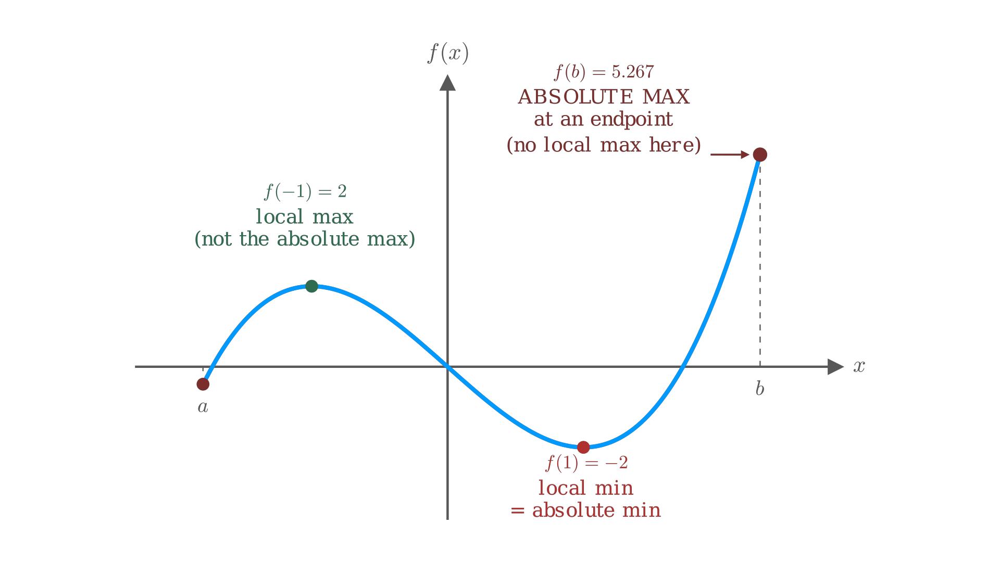
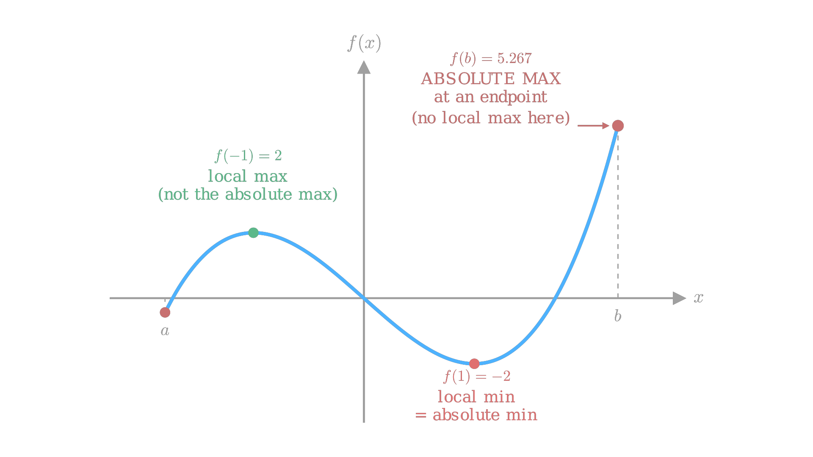
- State the Extreme Value Theorem and identify which hypothesis fails when a function has no maximum or minimum.
- Distinguish absolute (global) extrema from relative (local) extrema on a graph.
- Find all critical points of $f$, including points where $f'$ does not exist.
- Explain why a critical point need not be a local extremum, using $f(x)=x^3$.
- 陈述极值定理，并在函数没有最大值或最小值时指出哪个前提不成立。
- 在图像上区分绝对（全局）极值与相对（局部）极值。
- 求 $f$ 的所有临界点，包括 $f'$ 不存在的点。
- 用 $f(x)=x^3$ 说明临界点为何不一定是局部极值。
The Extreme Value Theorem (EVT) provides another existence guarantee: a continuous function on a closed interval must attain both an absolute maximum and an absolute minimum. This simple-sounding result is the foundation for all optimization analysis.极值定理（Extreme Value Theorem，EVT）给出了另一个存在性保证：闭区间上的连续函数必能取到至少一个绝对最大值（absolute maximum）和至少一个绝对最小值（absolute minimum）。这一看似简单的结论是所有最优化（optimization）分析的基础。
If $f$ is continuous on $[a, b]$, then $f$ attains at least one minimum value and at least one maximum value on $[a, b]$.若 $f$ 在 $[a, b]$ 上连续，则 $f$ 在 $[a, b]$ 上至少取得一个最小值和一个最大值。
Critical Points临界点
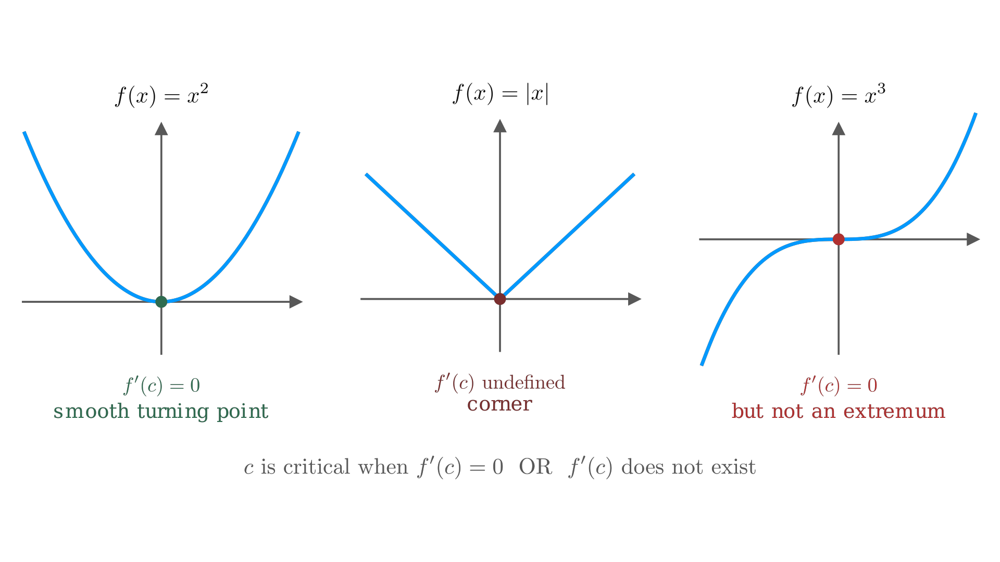
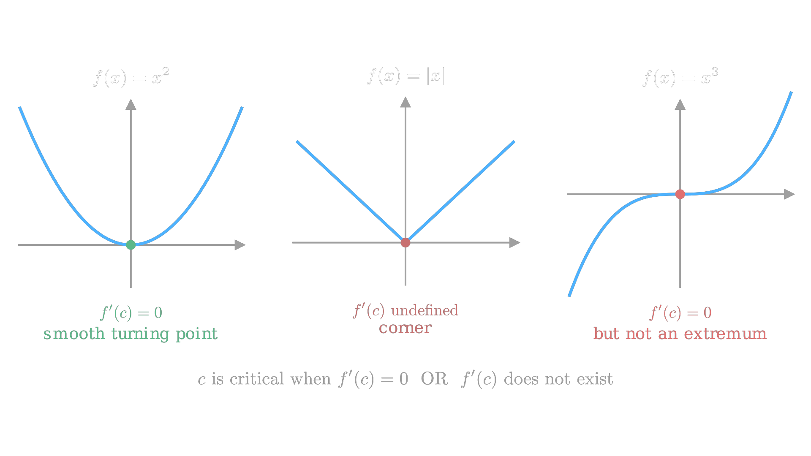
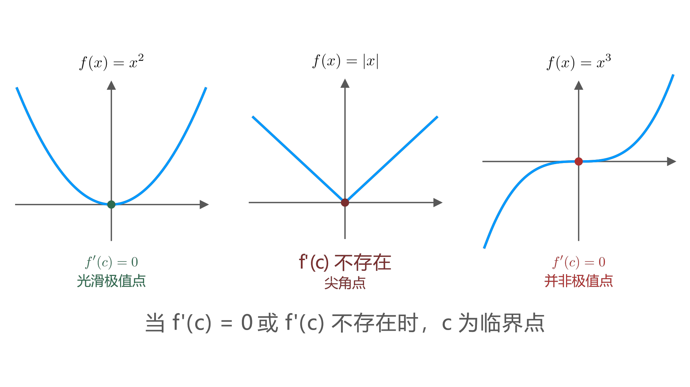
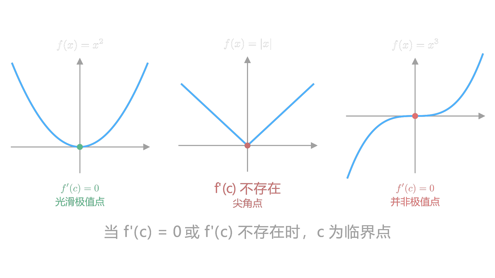
A critical point of $f$ is a point $x = c$ in the domain of $f$ where $f'(c) = 0$ or $f'(c)$ does not exist. Critical points are the only candidates for local extrema, but not every critical point produces one. A critical point where $f$ is continuous and the derivative changes sign is a local extremum; one where the derivative has the same sign on both sides (such as an inflection point with a horizontal tangent) is not.$f$ 的临界点（critical point）是 $f$ 的定义域中满足 $f'(c) = 0$ 或 $f'(c)$ 不存在的点 $x = c$。临界点是局部极值（local extremum）的唯一候选，但并非每个临界点都产生极值。若 $f$ 在该点连续且导数在该点变号，则该点是局部极值；若导数在两侧同号（如带水平切线的拐点（inflection point）），则不是极值。
Not every critical point is an extremum. For example, $f(x) = x^3$ has $f'(0) = 0$, but $x = 0$ is neither a local max nor a local min. Always apply a test (first or second derivative) before concluding.并非每个临界点都是极值。例如 $f(x) = x^3$ 满足 $f'(0) = 0$，但 $x = 0$ 既不是局部最大值也不是局部最小值。下结论前务必应用判别法：一阶导数判别法（first derivative test）或二阶导数判别法（second derivative test）。
| Learning Objective学习目标 | Essential Knowledge核心知识 |
|---|---|
FUN-1.C Justify conclusions about functions by applying the Extreme Value Theorem.通过应用极值定理论证关于函数的结论。 |
EVT guarantees a min and max on $[a,b]$ if $f$ is continuous. Critical points occur where $f'=0$ or $f'$ DNE. All local extrema occur at critical points, but not all critical points are local extrema.若 $f$ 连续，EVT 保证在 $[a,b]$ 上取到最小值和最大值。临界点出现在 $f'=0$ 或 $f'$ 不存在的位置。所有局部极值都出现在临界点，但并非所有临界点都是局部极值。 |
Worked Example: Critical points where $f'$ is zero or undefined例题：$f'$ 为零或不存在的临界点
Worked Example: When the Extreme Value Theorem does and does not apply例题：极值定理何时适用、何时不适用
Before citing the Extreme Value Theorem, write both conditions in your answer: the function is continuous and the interval is closed. A function given on an open interval such as $(0,1)$, or one with a jump, is a signal that the theorem does not apply. When you list critical points, check the domain: a value where $f'$ is undefined counts only if $f$ itself is defined there.
引用极值定理之前，先在答案中写出两个条件：函数连续、区间为闭区间。若函数给在开区间如 $(0,1)$ 上，或带有跳跃间断，就提示该定理不适用。列出临界点时要核对定义域：$f'$ 无定义的点，只有在 $f$ 本身有定义时才算临界点。
Find the critical points of $h(x)=x^3-12x$.求 $h(x)=x^3-12x$ 的临界点。
$h'(x)=3x^2-12=3(x-2)(x+2)$, which exists everywhere, so the critical points are the zeros: $x=-2$ and $x=2$.
$h'(x)=3x^2-12=3(x-2)(x+2)$ 处处存在，所以临界点就是其零点：$x=-2$ 与 $x=2$。
Does the EVT guarantee an absolute maximum for $f(x)=\tan x$ on $[0,\pi]$?极值定理是否保证 $f(x)=\tan x$ 在 $[0,\pi]$ 上有绝对最大值？
No. $\tan x$ is undefined at $x=\frac{\pi}{2}$, which lies in $[0,\pi]$, so $f$ is not continuous on the interval. In fact $\tan x\to\infty$ as $x\to\frac{\pi}{2}^-$, so there is no absolute maximum.
不能。$\tan x$ 在 $x=\frac{\pi}{2}$ 处无定义，而该点在 $[0,\pi]$ 内，所以 $f$ 在区间上不连续。事实上当 $x\to\frac{\pi}{2}^-$ 时 $\tan x\to\infty$，所以不存在绝对最大值。
True or false: if $f'(c)=0$, then $f$ has a local extremum at $x=c$.判断正误：若 $f'(c)=0$，则 $f$ 在 $x=c$ 处有局部极值。
False. For $f(x)=x^3$, $f'(0)=0$, but $f'(x)=3x^2>0$ on both sides of $0$, so $f'$ does not change sign and $f$ keeps increasing through $x=0$. There is no extremum there.
错误。对 $f(x)=x^3$，$f'(0)=0$，但 $0$ 两侧都有 $f'(x)=3x^2>0$，所以 $f'$ 不变号，$f$ 穿过 $x=0$ 时一直递增。该处没有极值。
Determining Intervals on Which a Function Is Increasing or Decreasing判定函数的递增与递减区间
- State how the sign of $f'$ on an interval shows that $f$ is increasing or decreasing there.
- Find the critical points of $f$ and use them to split the domain into test intervals.
- Determine the intervals of increase and decrease by testing the sign of $f'$ in each interval.
- Justify an increasing or decreasing claim in a sentence that names $f'$ and its sign.
- Read intervals of increase and decrease from a graph of $f'$.
- 陈述 $f'$ 在区间上的符号如何说明 $f$ 在该区间递增或递减。
- 求 $f$ 的临界点，并用它们把定义域分成检验区间。
- 在每个区间检验 $f'$ 的符号，确定递增与递减区间。
- 用点明 $f'$ 及其符号的句子论证递增或递减的结论。
- 从 $f'$ 的图像读出递增与递减区间。
The first derivative is the primary tool for analyzing where a function rises and falls. The sign of $f'(x)$ on an interval directly tells you the behavior of $f$ on that interval.一阶导数（first derivative）是分析函数上升与下降的主要工具。$f'(x)$ 在某区间上的符号直接表征 $f$ 在该区间的行为。
If $f'(x) > 0$ for all $x$ in an interval, then $f$ is increasing on that interval. If $f'(x) < 0$ for all $x$ in an interval, then $f$ is decreasing on that interval.若区间内所有 $x$ 满足 $f'(x) > 0$，则 $f$ 在该区间上递增（increasing）。若区间内所有 $x$ 满足 $f'(x) < 0$，则 $f$ 在该区间上递减（decreasing）。
Process流程
To determine intervals of increase or decrease: find all critical points of $f$ (where $f' = 0$ or $f'$ does not exist), then test the sign of $f'$ in each interval between consecutive critical points. Use a sign chart or number line as a workspace, but a sign chart alone is an incomplete justification: express your reasoning in sentences.判定递增或递减区间的流程：找出 $f$ 的所有临界点（$f' = 0$ 或 $f'$ 不存在之处），然后检验 $f'$ 在相邻临界点之间各区间上的符号。可用符号表（sign chart）或数轴作为草稿，但仅凭符号表是不完整的论证：必须用完整句子表达推理。
When asked whether $f$ is increasing or decreasing at a point, frame your answer in terms of the derivative: "$f$ is increasing on $(a, b)$ because $f'(x) > 0$ for all $x$ in $(a, b)$." Never say "it's going up" without referencing the derivative.被问及 $f$ 在某点附近递增或递减时，应以导数措辞作答："$f$ 在 $(a, b)$ 上递增，因为对所有 $x \in (a, b)$ 有 $f'(x) > 0$"。切勿仅说"图像向上"而不引用导数。
Worked Example: Increasing/decreasing intervals of $f(x)=x^3-3x$例题：$f(x)=x^3-3x$ 的递增/递减区间
Worked Example: Increasing/decreasing intervals of $f(x)=xe^{-x}$例题：$f(x)=xe^{-x}$ 的递增/递减区间
On which interval is $f(x)=x^3-6x^2$ decreasing?$f(x)=x^3-6x^2$ 在哪个区间上递减？
$f'(x)=3x^2-12x=3x(x-4)$, with zeros $x=0$ and $x=4$. A test value gives $f'(1)=-9<0$, while $f'(-1)=15>0$ and $f'(5)=15>0$. So $f$ is decreasing on $(0,4)$ because $f'(x)<0$ there.
$f'(x)=3x^2-12x=3x(x-4)$，零点为 $x=0$ 与 $x=4$。检验值 $f'(1)=-9<0$，而 $f'(-1)=15>0$、$f'(5)=15>0$。所以 $f$ 在 $(0,4)$ 上递减，因为该处 $f'(x)<0$。
Given $g'(x)=(x+2)(x-1)^2$, where is $g$ increasing?已知 $g'(x)=(x+2)(x-1)^2$，$g$ 在哪里递增？
$(x-1)^2\ge0$, so the sign of $g'$ comes from $x+2$: $g'<0$ for $x<-2$ and $g'>0$ on $(-2,1)$ and $(1,\infty)$. The zero at $x=1$ does not change the sign, so $g$ is increasing on $(-2,\infty)$.
$(x-1)^2\ge0$，所以 $g'$ 的符号由 $x+2$ 决定：$x<-2$ 时 $g'<0$，在 $(-2,1)$ 与 $(1,\infty)$ 上 $g'>0$。$x=1$ 处的零点不改变符号，所以 $g$ 在 $(-2,\infty)$ 上递增。
The graph of $f'$ lies below the $x$-axis on $(2,5)$. Write a justified statement about $f$ on $(2,5)$.$f'$ 的图像在 $(2,5)$ 上位于 $x$ 轴下方。写出关于 $f$ 在 $(2,5)$ 上的有论证的结论。
"$f$ is decreasing on $(2,5)$ because $f'(x)<0$ on $(2,5)$." The height of the graph of $f'$ is the value of $f'$, so below the axis means $f'$ is negative; it says nothing about the sign of $f$.
"$f$ 在 $(2,5)$ 上递减，因为在 $(2,5)$ 上 $f'(x)<0$。" $f'$ 图像的高度就是 $f'$ 的值，位于轴下方表示 $f'$ 为负；这并不说明 $f$ 的符号。
Using the First Derivative Test to Determine Relative (Local) Extrema运用一阶导数判别法确定相对（局部）极值
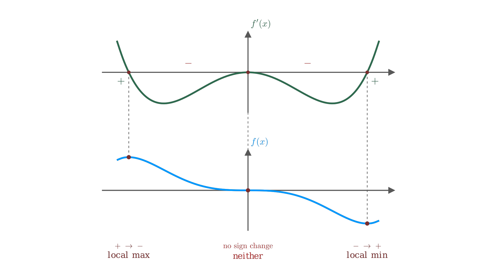
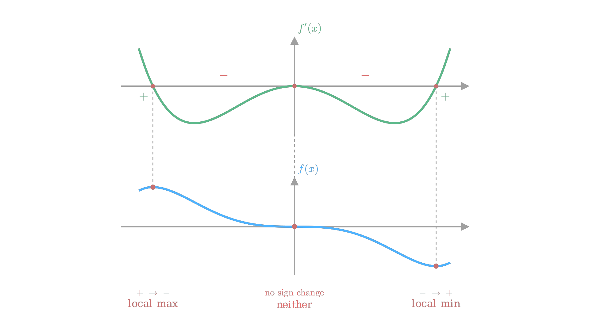
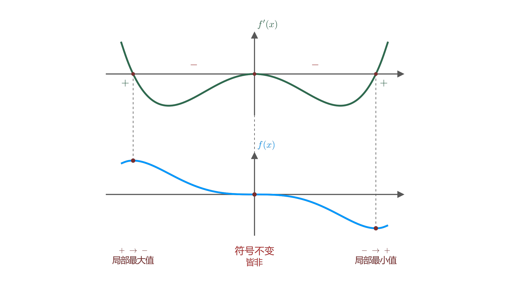
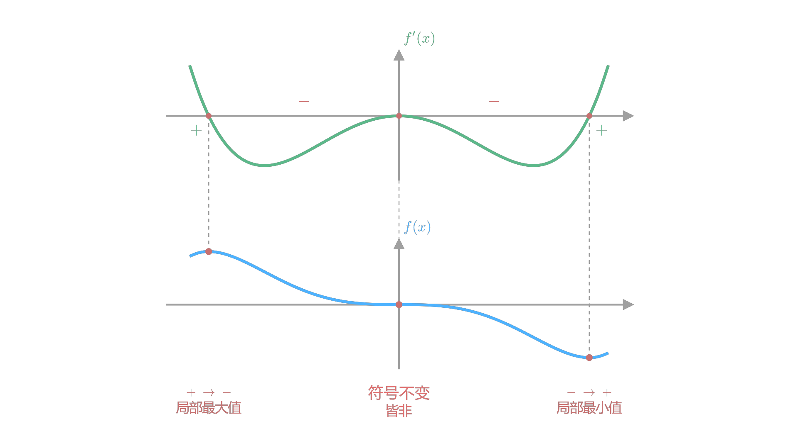
- State the First Derivative Test for a local maximum and for a local minimum.
- Locate the critical points of $f$ and classify each one from the sign change of $f'$.
- Explain why a critical point where $f'$ has the same sign on both sides is neither a maximum nor a minimum.
- Apply the test at a critical point where $f'$ does not exist.
- Write a three-part justification: critical point, sign change of $f'$, name of the test.
- 陈述判定局部最大值与局部最小值的一阶导数判别法。
- 找出 $f$ 的临界点，并根据 $f'$ 的变号对每个临界点分类。
- 说明 $f'$ 在两侧同号的临界点为何既非最大值也非最小值。
- 在 $f'$ 不存在的临界点处应用该判别法。
- 写出三要素论证：临界点、$f'$ 的变号、判别法名称。
The First Derivative Test uses sign changes of $f'$ around a critical point to classify it as a local maximum, local minimum, or neither.一阶导数判别法（first derivative test）通过 $f'$ 在临界点附近的变号情况，将该临界点判定为局部最大值、局部最小值或两者皆非。
If $c$ is a critical point of $f$, $f$ is continuous at $c$, and $f'$ changes from positive to negative at $c$, then $f$ has a local maximum at $c$. If $f'$ changes from negative to positive at $c$, then $f$ has a local minimum at $c$. If $f'$ is positive on both sides of $c$ or negative on both sides, then $c$ is neither.若 $c$ 是 $f$ 的临界点、$f$ 在 $c$ 处连续，且 $f'$ 在 $c$ 处由正变负，则 $f$ 在 $c$ 取得局部最大值。若 $f'$ 在 $c$ 处由负变正，则 $f$ 在 $c$ 取得局部最小值。若 $f'$ 在 $c$ 两侧同为正或同为负，则 $c$ 既非最大值也非最小值。
Writing a Complete Justification书写完整论证
A full justification requires three elements: (1) identify $c$ as a critical point, (2) describe the sign change of $f'$ around $c$, and (3) state the conclusion using the name of the test. For instance: "$f'(c) = 0$, and $f'$ changes from positive to negative at $x = c$, so by the First Derivative Test, $f$ has a local maximum at $x = c$."完整论证包含三要素：(1) 指出 $c$ 是临界点；(2) 描述 $f'$ 在 $c$ 附近的变号；(3) 引用判别法名称给出结论。例如："$f'(c) = 0$，且 $f'$ 在 $x = c$ 处由正变负，因此由一阶导数判别法，$f$ 在 $x = c$ 取得局部最大值。"
Apply an appropriate mathematical definition, theorem, or test. When justifying extrema, choose between the First Derivative Test and Second Derivative Test based on what information is available.应用恰当的数学定义、定理或判别法。论证极值时，根据已有信息在一阶导数判别法与二阶导数判别法之间作出选择。
Worked Example: First Derivative Test for $f(x)=x^4-4x^3$例题：用一阶导数判别法分析 $f(x)=x^4-4x^3$
Worked Example: A local maximum where $f'$ does not exist例题：$f'$ 不存在处的局部极大值
When you are given the graph of $f'$, the extrema of $f$ are where that graph crosses the $x$-axis, not at its own peaks and valleys (where the graph of $f'$ switches between increasing and decreasing, $f$ has inflection points). Write the sign change in words, for example "$f'$ changes from negative to positive at $x=3$", rather than "the graph goes up", and finish with the name of the test.
给定 $f'$ 的图像时，$f$ 的极值出现在该图像穿过 $x$ 轴的位置，而不是它自身的峰与谷（$f'$ 的图像在递增与递减之间转换处，$f$ 有拐点）。用文字写出变号，例如"$f'$ 在 $x=3$ 处由负变正"，而不是"图像上升"，最后点明判别法名称。
Given $f'(x)=(x-2)(x+3)$, classify each critical point of $f$.已知 $f'(x)=(x-2)(x+3)$，对 $f$ 的每个临界点分类。
The zeros are $x=-3$ and $x=2$. $f'>0$ for $x<-3$, $f'<0$ on $(-3,2)$, and $f'>0$ for $x>2$. By the First Derivative Test, $f$ has a local maximum at $x=-3$ and a local minimum at $x=2$.
零点为 $x=-3$ 与 $x=2$。$x<-3$ 时 $f'>0$，在 $(-3,2)$ 上 $f'<0$，$x>2$ 时 $f'>0$。由一阶导数判别法，$f$ 在 $x=-3$ 处有局部极大值，在 $x=2$ 处有局部极小值。
Given $g'(x)=x^2(x-4)$, does $g$ have a local extremum at $x=0$?已知 $g'(x)=x^2(x-4)$，$g$ 在 $x=0$ 处有局部极值吗？
No. Near $x=0$, $x^2>0$ and $x-4<0$, so $g'<0$ on both sides: no sign change, so $x=0$ is neither. At $x=4$, $g'$ changes from negative to positive, so $g$ has a local minimum there.
没有。在 $x=0$ 附近 $x^2>0$ 且 $x-4<0$，所以两侧都有 $g'<0$：不变号，$x=0$ 二者皆非。在 $x=4$ 处 $g'$ 由负变正，所以 $g$ 在该处有局部极小值。
$h'(1)=0$, $h'(x)>0$ on $(0,1)$ and $h'(x)<0$ on $(1,2)$. Write a complete justification for the behavior of $h$ at $x=1$.$h'(1)=0$，在 $(0,1)$ 上 $h'(x)>0$，在 $(1,2)$ 上 $h'(x)<0$。写出 $h$ 在 $x=1$ 处行为的完整论证。
"$h'(1)=0$, and $h'$ changes from positive to negative at $x=1$, so by the First Derivative Test $h$ has a local maximum at $x=1$." All three parts appear: the critical point, the sign change, and the test.
"$h'(1)=0$，且 $h'$ 在 $x=1$ 处由正变负，所以由一阶导数判别法，$h$ 在 $x=1$ 处有局部极大值。"三要素齐全：临界点、变号、判别法。
Using the Candidates Test to Determine Absolute (Global) Extrema运用候选点法确定绝对（全局）极值
- State the Candidates Test and the conditions (continuous $f$, closed interval) under which it applies.
- List every candidate: the interior critical points and both endpoints.
- Calculate $f$ at each candidate and identify the absolute maximum and minimum values.
- Explain why an endpoint can be an absolute extremum without being a critical point.
- Report an absolute extremum as a value of $f$ together with where it occurs.
- 陈述候选点法及其适用条件（$f$ 连续、闭区间）。
- 列出所有候选点：区间内部的临界点与两个端点。
- 计算 $f$ 在每个候选点的值，确定绝对最大值与绝对最小值。
- 说明端点为何可以是绝对极值而不是临界点。
- 以 $f$ 的值连同其取得位置来报告绝对极值。
When a function is continuous on a closed interval $[a, b]$, the Extreme Value Theorem guarantees absolute extrema exist. The Candidates Test is the procedure for finding them.当函数在闭区间 $[a, b]$ 上连续时，极值定理保证全局极值（absolute extremum）存在。候选点法（candidates test）就是寻找它们的标准流程。
On a closed interval $[a, b]$: (1) Find all critical points of $f$ in $(a, b)$. (2) Evaluate $f$ at each critical point and at both endpoints $a$ and $b$. (3) The largest value is the absolute maximum; the smallest is the absolute minimum.在闭区间 $[a, b]$ 上：(1) 找出 $f$ 在 $(a, b)$ 内的所有临界点；(2) 在每个临界点和两端点 $a$、$b$ 处计算 $f$ 的值；(3) 最大值即为绝对最大值，最小值即为绝对最小值。
This method works because absolute extrema on a closed interval can only occur at critical points or endpoints; there are no other possibilities. The test is straightforward but requires careful computation; do not forget to evaluate the function at the endpoints.此方法之所以有效，是因为闭区间上的绝对极值只能出现在临界点或端点处，别无他处。流程虽直接，但计算需谨慎；切勿忘记在端点处计算函数值。
Students sometimes forget to check the endpoints. On a closed interval, the absolute max or min may occur at an endpoint rather than at a critical point. Always evaluate $f(a)$ and $f(b)$.学生常忘记检查端点。在闭区间上，绝对最大值或最小值可能出现在端点而非临界点处。务必计算 $f(a)$ 和 $f(b)$。
Worked Example: Absolute extrema of $f(x)=x^3-3x$ on $[-2,3]$例题：$f(x)=x^3-3x$ 在 $[-2,3]$ 上的绝对极值
Worked Example: Absolute extrema of $f(x)=x-2\sin x$ on $[0,\pi]$例题：$f(x)=x-2\sin x$ 在 $[0,\pi]$ 上的绝对极值
Show the candidates as a short table of $x$ and $f(x)$, then answer in a sentence such as "the absolute maximum value is $18$, at $x=3$". "Value" means the output of $f$; give the location as well when the question asks where. A first or second derivative test on its own shows only a local extremum; on a closed interval, the Candidates Test is the argument for an absolute one.
把候选点列成 $x$ 与 $f(x)$ 的小表，再用一句话作答，例如"绝对最大值为 $18$，在 $x=3$ 处取得"。"值"（value）指 $f$ 的输出；题目问"在何处"时还要给出位置。单靠一阶或二阶导数判别法只能说明局部极值；在闭区间上，论证绝对极值要用候选点法。
Find the absolute extrema of $f(x)=x^2-4x$ on $[0,3]$.求 $f(x)=x^2-4x$ 在 $[0,3]$ 上的绝对极值。
$f'(x)=2x-4=0$ gives $x=2$. Candidates: $f(0)=0$, $f(2)=-4$, $f(3)=-3$. The absolute maximum is $0$ at $x=0$ and the absolute minimum is $-4$ at $x=2$.
$f'(x)=2x-4=0$ 得 $x=2$。候选值：$f(0)=0$，$f(2)=-4$，$f(3)=-3$。绝对最大值为 $0$（在 $x=0$），绝对最小值为 $-4$（在 $x=2$）。
Why can the Candidates Test not be used for $g(x)=\frac1x$ on $[-1,1]$?为什么不能对 $g(x)=\frac1x$ 在 $[-1,1]$ 上使用候选点法？
$g$ is undefined at $x=0$, which is inside $[-1,1]$, so $g$ is not continuous on the interval and the Extreme Value Theorem does not apply. In fact $g$ is unbounded near $0$, so it has no absolute maximum or minimum there.
$g$ 在 $x=0$ 处无定义，而该点在 $[-1,1]$ 内，所以 $g$ 在区间上不连续，极值定理不适用。事实上 $g$ 在 $0$ 附近无界，所以没有绝对最大值或最小值。
$f$ is continuous on $[0,4]$ with one critical point, $x=1$. If $f(0)=3$, $f(1)=-2$ and $f(4)=5$, give the absolute extrema.$f$ 在 $[0,4]$ 上连续，唯一临界点为 $x=1$。若 $f(0)=3$、$f(1)=-2$、$f(4)=5$，写出绝对极值。
Compare the three candidates. The absolute maximum is $5$, at the endpoint $x=4$; the absolute minimum is $-2$, at $x=1$.
比较三个候选值。绝对最大值为 $5$，在端点 $x=4$ 处；绝对最小值为 $-2$，在 $x=1$ 处。
Determining Concavity of Functions over Their Domains在定义域上判定函数的凹凸性
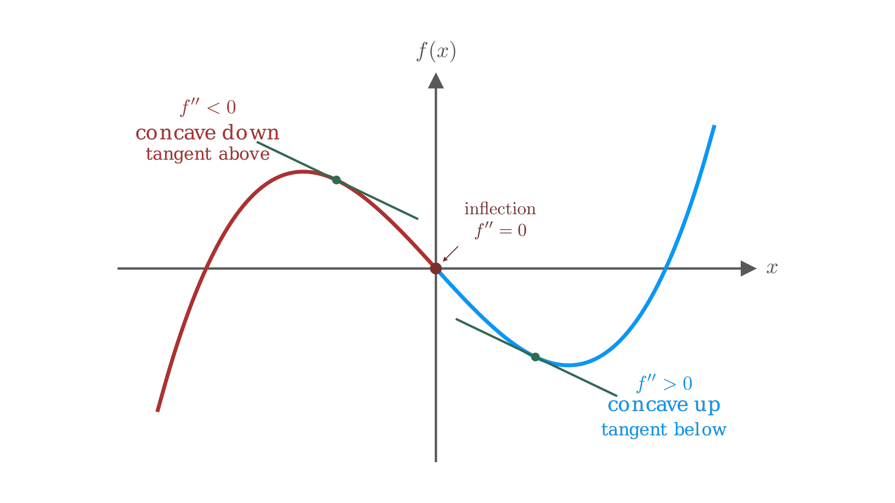
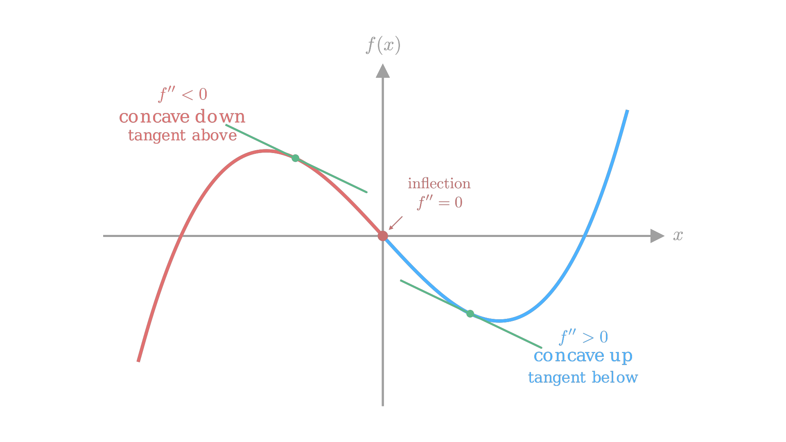
- State how the sign of $f''$ on an interval shows that $f$ is concave up or concave down there.
- Relate the concavity of $f$ to whether $f'$ is increasing or decreasing.
- Find candidate inflection points where $f''=0$ or $f''$ does not exist.
- Confirm or reject each candidate by testing the sign of $f''$ on both sides.
- Justify a concavity claim in a sentence that names $f''$ and its sign.
- 陈述 $f''$ 在区间上的符号如何说明 $f$ 在该区间上凹或下凹。
- 把 $f$ 的凹凸性与 $f'$ 的递增或递减联系起来。
- 在 $f''=0$ 或 $f''$ 不存在处找出拐点候选。
- 检验 $f''$ 在两侧的符号，确认或排除每个候选。
- 用点明 $f''$ 及其符号的句子论证凹凸性。
Concavity describes the curvature of a graph. While the first derivative tells us direction (increasing/decreasing), the second derivative tells us how the rate of change itself is changing: the shape of the curve.凹凸性（concavity）描述图像的弯曲方式。一阶导数告诉我们方向（递增/递减），二阶导数（second derivative）则告诉我们变化率本身如何变化，即曲线的形状。
If $f''(x) > 0$ on an interval, then $f$ is concave up on that interval, so the graph bends upward like a cup. If $f''(x) < 0$ on an interval, then $f$ is concave down on that interval, so the graph bends downward like a frown.若 $f''(x) > 0$ 在某区间成立，则 $f$ 在该区间上凹（concave up），图像如杯状向上弯曲。若 $f''(x) < 0$ 在某区间成立，则 $f$ 在该区间下凹（concave down），图像如倒置的杯状向下弯曲。
By definition, $f$ is concave up on an interval where $f'$ is increasing, and concave down where $f'$ is decreasing; the sign of $f''$ is a sufficient test for this, not the definition. This connection between $f'$ behavior and $f$ concavity is essential for graph analysis.按定义，$f$ 在 $f'$ 递增的区间上上凹，在 $f'$ 递减的区间上下凹；$f''$ 的符号只是判定这一点的充分条件，而不是定义。$f'$ 行为与 $f$ 凹凸性之间的这一联系是图像分析的核心。
Points of Inflection拐点
A point of inflection is a point where $f$ is continuous and the concavity of $f$ changes. At an inflection point, $f''$ must either equal zero or fail to exist; but, as with critical points, $f'' = 0$ alone does not guarantee an inflection point. You must confirm that concavity actually changes by checking the sign of $f''$ on either side.拐点（inflection point）是 $f$ 连续且 $f$ 的凹凸性发生变化的位置。拐点处 $f''$ 必须等于零或不存在；但与临界点类似，仅 $f'' = 0$ 并不能保证拐点存在。必须通过检验 $f''$ 在两侧的符号确认凹凸性确实发生变化。
Take $f(x) = x^4$. Then $f'(x) = 4x^3$ and $f''(x) = 12x^2$.取 $f(x) = x^4$，则 $f'(x) = 4x^3$，$f''(x) = 12x^2$。
- $f''(0) = 0$, so $x = 0$ is a candidate for an inflection point.$f''(0) = 0$，所以 $x = 0$ 是拐点候选。
- But $f''(x) = 12x^2 \ge 0$ for every real $x$. The sign of $f''$ never changes.然而对所有实数 $x$ 都有 $f''(x) = 12x^2 \ge 0$。$f''$ 的符号从不变化。
- Therefore $f$ is concave up everywhere, including at $x = 0$: there is no inflection point at $x = 0$.因此 $f$ 处处上凹，$x = 0$ 处也不例外，$x = 0$ 处不是拐点。
Takeaway:要点： If $f''(c)$ exists at an inflection point $c$, then $f''(c) = 0$: this is necessary in that case, but it is not sufficient. You must verify a sign change of $f''$ across $c$. The same caveat applies when $f''(c)$ fails to exist: that only marks a candidate.若拐点 $c$ 处 $f''(c)$ 存在，则 $f''(c) = 0$：此时这是必要条件，但不充分。必须验证 $f''$ 在 $c$ 两侧变号。$f''(c)$ 不存在的情形也有同样的注意事项：它只给出候选点。
When justifying concavity, always reference $f''$. Say "$f$ is concave up on $(a, b)$ because $f''(x) > 0$ on $(a, b)$," not just "the graph is concave up." Precision in naming $f$, $f'$, and $f''$ is critical.论证凹凸性时必须引用 $f''$。要写"$f$ 在 $(a, b)$ 上上凹，因为 $f''(x) > 0$ 在 $(a, b)$ 上成立"，而不仅是"图像上凹"。精确称呼 $f$、$f'$、$f''$ 至关重要。
Worked Example: Concavity and inflection for $f(x)=x^3-6x^2+9x+1$例题：$f(x)=x^3-6x^2+9x+1$ 的凹凸性与拐点
Worked Example: An inflection point where $f''$ does not exist例题：$f''$ 不存在处的拐点
Find the intervals of concavity and any inflection point of $f(x)=x^3-3x^2+4$.求 $f(x)=x^3-3x^2+4$ 的凹凸区间与拐点。
$f''(x)=6x-6$, zero at $x=1$. $f''<0$ on $(-\infty,1)$, so $f$ is concave down there; $f''>0$ on $(1,\infty)$, so $f$ is concave up there. Since $f(1)=1-3+4=2$, the inflection point is $(1,2)$.
$f''(x)=6x-6$，零点为 $x=1$。在 $(-\infty,1)$ 上 $f''<0$，故 $f$ 下凹；在 $(1,\infty)$ 上 $f''>0$，故 $f$ 上凹。由于 $f(1)=1-3+4=2$，拐点为 $(1,2)$。
Find the inflection points of $h(x)=x^4-4x^3$.求 $h(x)=x^4-4x^3$ 的拐点。
$h''(x)=12x^2-24x=12x(x-2)$. The sign is positive for $x<0$, negative on $(0,2)$ and positive for $x>2$, so the concavity changes at both zeros. With $h(0)=0$ and $h(2)=16-32=-16$, the inflection points are $(0,0)$ and $(2,-16)$.
$h''(x)=12x^2-24x=12x(x-2)$。$x<0$ 时为正，在 $(0,2)$ 上为负，$x>2$ 时为正，所以凹凸性在两个零点处都改变。由 $h(0)=0$ 与 $h(2)=16-32=-16$，拐点为 $(0,0)$ 与 $(2,-16)$。
The graph of $f'$ is decreasing on $(-1,4)$. What does this tell you about $f$ on $(-1,4)$, and why?$f'$ 的图像在 $(-1,4)$ 上递减。这说明 $f$ 在 $(-1,4)$ 上有什么性质？为什么？
$f$ is concave down on $(-1,4)$, because concave down means the slope $f'$ is decreasing (where $f''$ exists, $f''\le0$). It says nothing about whether $f$ itself is increasing or decreasing.
$f$ 在 $(-1,4)$ 上下凹，因为下凹就是斜率 $f'$ 递减（在 $f''$ 存在处 $f''\le0$）。这并不说明 $f$ 本身是递增还是递减。
Using the Second Derivative Test to Determine Extrema运用二阶导数判别法确定极值
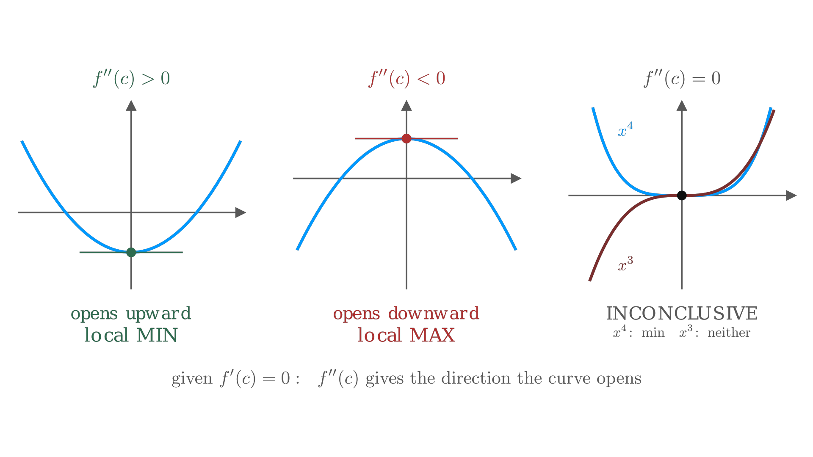
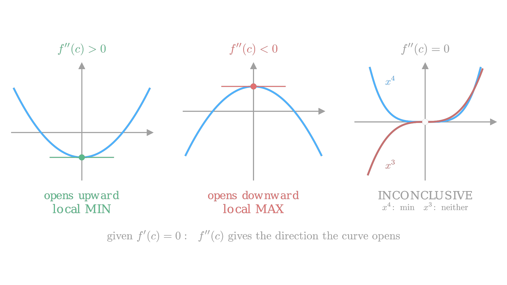
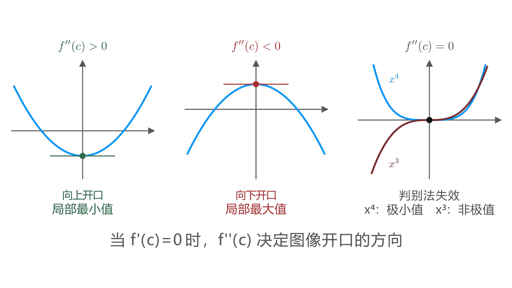
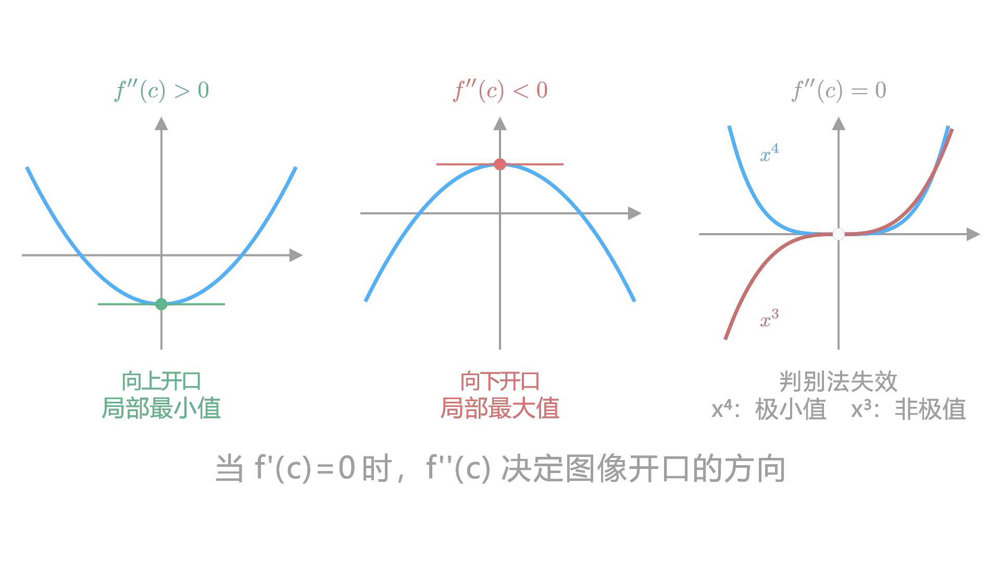
- State the Second Derivative Test and the case in which it is inconclusive.
- Calculate $f''(c)$ at each critical point where $f'(c)=0$ and classify the point.
- Explain why the test cannot be used at a critical point where $f'(c)$ does not exist.
- Deduce that the only local extremum of a continuous function on an interval is also the absolute extremum there.
- Choose between the first and second derivative tests from the information given.
- 陈述二阶导数判别法及其无法判定的情形。
- 在每个满足 $f'(c)=0$ 的临界点计算 $f''(c)$ 并对该点分类。
- 说明在 $f'(c)$ 不存在的临界点处为何不能使用该判别法。
- 推断：连续函数在某区间上唯一的局部极值也是该区间上的绝对极值。
- 根据已知信息在一阶与二阶导数判别法之间作出选择。
The Second Derivative Test provides an alternative to the First Derivative Test for classifying critical points. It is often more efficient when the second derivative is easy to evaluate.二阶导数判别法（second derivative test）为临界点分类提供了一阶导数判别法之外的另一种途径。当二阶导数易于计算时，它通常更高效。
If $f'(c) = 0$ and $f''(c) > 0$, then $f$ has a local minimum at $x = c$. If $f'(c) = 0$ and $f''(c) < 0$, then $f$ has a local maximum at $x = c$. If $f''(c) = 0$, the test is inconclusive so you should switch to the First Derivative Test.若 $f'(c) = 0$ 且 $f''(c) > 0$，则 $f$ 在 $x = c$ 取得局部最小值。若 $f'(c) = 0$ 且 $f''(c) < 0$，则 $f$ 在 $x = c$ 取得局部最大值。若 $f''(c) = 0$，则该判别法无法判定，应改用一阶导数判别法。
One Critical Point on an Interval区间上仅有一个临界点
When a continuous function has exactly one critical point on an interval and that critical point is a local extremum, it is also the absolute extremum on that interval. This is a powerful shortcut in optimization problems.当连续函数在某区间上恰有一个临界点且该临界点是局部极值时，它也是该区间上的绝对极值。这在最优化问题中是一条强有力的捷径。
Use the First Derivative Test when you already have sign information about $f'$ or when $f''$ is difficult to compute. Use the Second Derivative Test when $f''$ is readily available and you simply need to check its sign at a critical point.已知 $f'$ 的符号信息或 $f''$ 难以计算时，使用一阶导数判别法。$f''$ 现成可用且只需在临界点处检查其符号时，使用二阶导数判别法。
Worked Example: Second Derivative Test for $f(x)=x^3-3x^2-9x+2$例题：用二阶导数判别法分析 $f(x)=x^3-3x^2-9x+2$
Worked Example: When the Second Derivative Test is inconclusive例题：二阶导数判别法无法判定时
State both facts in the conclusion: "$f'(2)=0$ and $f''(2)<0$, so by the Second Derivative Test $f$ has a local maximum at $x=2$." Writing only $f''(2)<0$ leaves out why $x=2$ is a critical point. If $f''(c)=0$, say the test is inconclusive and switch to the First Derivative Test; do not conclude that $c$ is an inflection point.
结论中写出两个事实："$f'(2)=0$ 且 $f''(2)<0$，所以由二阶导数判别法，$f$ 在 $x=2$ 处有局部极大值。"只写 $f''(2)<0$ 就漏掉了 $x=2$ 为何是临界点。若 $f''(c)=0$，要写明判别法无法判定并改用一阶导数判别法；不要断定 $c$ 是拐点。
$f'(x)=x^2-4$ and $f''(x)=2x$. Classify the critical points of $f$.$f'(x)=x^2-4$，$f''(x)=2x$。对 $f$ 的临界点分类。
$f'(x)=0$ at $x=\pm2$. $f''(2)=4>0$, so $f$ has a local minimum at $x=2$; $f''(-2)=-4<0$, so $f$ has a local maximum at $x=-2$.
$x=\pm2$ 时 $f'(x)=0$。$f''(2)=4>0$，所以 $f$ 在 $x=2$ 处有局部极小值；$f''(-2)=-4<0$，所以 $f$ 在 $x=-2$ 处有局部极大值。
$f'(5)=0$ and $f''(5)=0$. Which test comes next, and why can no conclusion be drawn yet?$f'(5)=0$ 且 $f''(5)=0$。下一步用哪种判别法？为什么现在还不能下结论？
Use the First Derivative Test. All three outcomes are possible: $(x-5)^4$ has a minimum at $x=5$, $-(x-5)^4$ has a maximum there, and $(x-5)^3$ has neither, yet each has first and second derivatives equal to $0$ at $x=5$.
使用一阶导数判别法。三种结果都有可能：$(x-5)^4$ 在 $x=5$ 处取极小值，$-(x-5)^4$ 在该处取极大值，$(x-5)^3$ 二者皆非，但它们在 $x=5$ 处的一阶与二阶导数都等于 $0$。
$C(x)=x+\frac{100}{x}$ for $x>0$. Find its critical point and explain why it gives the absolute minimum on $(0,\infty)$.$C(x)=x+\frac{100}{x}$，$x>0$。求其临界点，并说明它为何给出 $(0,\infty)$ 上的绝对最小值。
$C'(x)=1-\frac{100}{x^2}=0$ gives $x=10$ (the only critical point with $x>0$). $C''(x)=\frac{200}{x^3}$, so $C''(10)=0.2>0$ and $x=10$ is a local minimum. $C$ is continuous on $(0,\infty)$ with only this one critical point, so the local minimum is the absolute minimum: $C(10)=10+10=20$.
$C'(x)=1-\frac{100}{x^2}=0$ 得 $x=10$（$x>0$ 时唯一的临界点）。$C''(x)=\frac{200}{x^3}$，所以 $C''(10)=0.2>0$，$x=10$ 是局部极小值点。$C$ 在 $(0,\infty)$ 上连续且只有这一个临界点，所以该局部极小值就是绝对最小值：$C(10)=10+10=20$。
Sketching Graphs of Functions and Their Derivatives绘制函数及其导数的图像
- Identify the intervals of increase, decrease and concavity of $f$ from the signs of $f'$ and $f''$.
- Locate local extrema and inflection points from a sign chart and plot them.
- Sketch a graph of $f$ consistent with given information about $f'$ and $f''$.
- Sketch the graph of $f'$ from a graph of $f$, with zeros of $f'$ at the horizontal tangents.
- Explain why a positive value of $f'$ means $f$ is increasing, not that $f$ is positive.
- 由 $f'$ 与 $f''$ 的符号确定 $f$ 的递增、递减与凹凸区间。
- 从符号表定位局部极值与拐点并在图上标出。
- 绘出与 $f'$、$f''$ 的已知信息相符的 $f$ 的图像。
- 由 $f$ 的图像绘出 $f'$ 的图像，$f'$ 的零点对应水平切线。
- 说明 $f'$ 取正值意味着 $f$ 递增，而不是 $f$ 为正。
This topic ties together everything you've learned about derivatives and graph behavior. You should be able to move fluidly between the graph of $f$, the graph of $f'$, and the graph of $f''$.本主题串联了关于导数与图像行为的所有内容。应当能在 $f$、$f'$、$f''$ 的图像之间自如切换。
Key features of a function's graph (intervals of increase/decrease, local extrema, concavity, and inflection points) can all be identified from $f'$ and $f''$. Conversely, given a graph of $f$, you should be able to sketch $f'$.函数图像的关键特征（递增/递减区间、局部极值、凹凸性、拐点）都可由 $f'$ 和 $f''$ 识别。反之，给定 $f$ 的图像，应能绘出 $f'$ 的图像。
Reading $f$ from $f'$从 $f'$ 读出 $f$
Where $f' > 0$, $f$ is increasing. Where $f' < 0$, $f$ is decreasing. Where $f'$ changes sign and $f$ is continuous, $f$ has a local extremum. Where $f'$ is increasing, $f$ is concave up. Where $f'$ is decreasing, $f$ is concave down. Where $f'$ switches between increasing and decreasing and $f$ is continuous, $f$ has an inflection point.$f' > 0$ 处，$f$ 递增；$f' < 0$ 处，$f$ 递减；$f'$ 变号且 $f$ 连续处，$f$ 取得局部极值；$f'$ 递增处，$f$ 上凹；$f'$ 递减处，$f$ 下凹；$f'$ 在递增与递减之间转换且 $f$ 连续处，$f$ 有拐点。
Do not confuse properties of $f'$ with properties of $f$. When looking at the graph of $f'$, a positive $y$-value means $f$ is increasing, not that $f$ is positive. Always be explicit: "Because $f'(x) > 0$…" rather than "because it is positive…"切勿混淆 $f'$ 与 $f$ 的性质。看 $f'$ 的图像时，正的 $y$ 值意味着 $f$ 递增，而非 $f$ 为正。务必表述清晰："由于 $f'(x) > 0$……"，而非"由于它为正……"。
Worked Example: Reading a Sign-Change Description例题：解读变号描述
Suppose $f'(x) < 0$ on $(-\infty, 0)$, $f'(x) > 0$ on $(0, 3)$, $f'(x) < 0$ on $(3, \infty)$, with $f'(0)=0$ and $f'(3)$ undefined (a corner). Then $f$ is decreasing, then increasing, then decreasing again: a local minimum at $x=0$ (sign changes $-$ to $+$) and a local maximum at $x=3$ (sign changes $+$ to $-$). Even though $f'(3)$ does not exist, the First Derivative Test still applies because it requires $f$ to be continuous at the critical point (a corner is) and $f'$ to change sign there, not differentiability.设 $f'(x) < 0$ 于 $(-\infty, 0)$，$f'(x) > 0$ 于 $(0, 3)$，$f'(x) < 0$ 于 $(3, \infty)$，且 $f'(0)=0$、$f'(3)$ 不存在（拐角）。则 $f$ 先递减、再递增、再递减：在 $x=0$ 处（由 $-$ 变 $+$）取得局部最小值，在 $x=3$ 处（由 $+$ 变 $-$）取得局部最大值。尽管 $f'(3)$ 不存在，一阶导数判别法在临界点处仍然适用，因为它要求 $f$ 在临界点处连续（拐角处连续）且 $f'$ 在该处变号，不要求可导。
Worked Example: Graph features of $f(x)=x^4-2x^2$ from $f'$ and $f''$例题：由 $f'$ 与 $f''$ 得到 $f(x)=x^4-2x^2$ 的图像特征
A sketch shows only what you mark on it. Put a dot at each extremum and inflection point with its coordinates, and draw the correct concavity on every interval. When the given graph is $f'$, the extrema of $f$ sit where that graph crosses the $x$-axis, and the inflection points of $f$ sit where that graph switches between increasing and decreasing.
草图只能表达你在图上标出的信息。在每个极值点与拐点处画点并标坐标，并在每个区间上画出正确的凹凸性。当给出的是 $f'$ 的图像时，$f$ 的极值位于该图像穿过 $x$ 轴处，$f$ 的拐点位于该图像在递增与递减之间转换处。
$f'>0$ on $(-\infty,2)$, $f'<0$ on $(2,\infty)$, and $f''<0$ everywhere. Describe the graph of $f$.在 $(-\infty,2)$ 上 $f'>0$，在 $(2,\infty)$ 上 $f'<0$，且处处 $f''<0$。描述 $f$ 的图像。
$f$ rises, peaks at $x=2$ (a local maximum, and the absolute maximum because it is the only one), then falls. It is concave down everywhere, so it has no inflection point; the shape is like an upside-down parabola with vertex at $x=2$.
$f$ 先上升，在 $x=2$ 处达到峰值（局部极大值；因为唯一，也是绝对最大值），然后下降。它处处下凹，所以没有拐点；形状类似顶点在 $x=2$ 的开口向下的抛物线。
The graph of $f$ has horizontal tangents at $x=-1$ and $x=3$ and rises between them. Where is $f'$ zero, and what is its sign on $(-1,3)$?$f$ 的图像在 $x=-1$ 与 $x=3$ 处有水平切线，且在两者之间上升。$f'$ 在何处为零？在 $(-1,3)$ 上符号如何？
$f'(-1)=0$ and $f'(3)=0$, so the graph of $f'$ meets the $x$-axis at $x=-1$ and $x=3$. Because $f$ rises on $(-1,3)$, $f'>0$ there: the graph of $f'$ lies above the axis between those zeros.
$f'(-1)=0$、$f'(3)=0$，所以 $f'$ 的图像在 $x=-1$ 与 $x=3$ 处与 $x$ 轴相交。由于 $f$ 在 $(-1,3)$ 上上升，该处 $f'>0$：$f'$ 的图像在这两个零点之间位于轴上方。
For $f(x)=x^3-3x$, list every local extremum and inflection point.对 $f(x)=x^3-3x$，列出所有局部极值与拐点。
$f'(x)=3x^2-3$ is zero at $x=\pm1$ and changes sign there: local maximum $(-1,2)$ and local minimum $(1,-2)$. $f''(x)=6x$ changes sign at $x=0$, so the inflection point is $(0,0)$.
$f'(x)=3x^2-3$ 在 $x=\pm1$ 处为零并变号：局部极大值点 $(-1,2)$，局部极小值点 $(1,-2)$。$f''(x)=6x$ 在 $x=0$ 处变号，所以拐点为 $(0,0)$。
Connecting a Function, Its First Derivative, and Its Second Derivative连接函数、一阶导数与二阶导数
- Explain how each feature of $f$ (increasing, extrema, concavity, inflection) appears in $f'$ and in $f''$.
- Deduce the behavior of $f$ at $x=c$ from the values $f'(c)$ and $f''(c)$.
- Determine the extrema and inflection points of $f$ from a formula or a graph of $f'$.
- Interpret given values of $f'$ and $f''$ to describe the graph of $f$.
- Justify each conclusion by naming the derivative and its sign or sign change.
- 说明 $f$ 的每个特征（递增、极值、凹凸性、拐点）在 $f'$ 与 $f''$ 中如何体现。
- 由 $f'(c)$ 与 $f''(c)$ 的值推断 $f$ 在 $x=c$ 处的行为。
- 由 $f'$ 的表达式或图像确定 $f$ 的极值与拐点。
- 解读给定的 $f'$ 与 $f''$ 的值，描述 $f$ 的图像。
- 每个结论都点明所用导数及其符号或变号来论证。
This topic consolidates the relationships among $f$, $f'$, and $f''$ into a unified analytical framework. Being able to translate information between these three levels is arguably the most important skill in this unit.本主题将 $f$、$f'$、$f''$ 之间的关系整合为统一的分析框架。能在这三个层级之间转换信息，可以说是本单元最重要的技能。
| Feature of $f$$f$ 的特征 | Sufficient condition from $f'$ ($f$ continuous at $c$)由 $f'$ 得出的充分条件（$f$ 在 $c$ 处连续） | Sufficient condition from $f''$ ($f$ continuous at $c$)由 $f''$ 得出的充分条件（$f$ 在 $c$ 处连续） |
|---|---|---|
| Increasing递增 | $f' > 0$ | no condition无要求 |
| Decreasing递减 | $f' < 0$ | no condition无要求 |
| Local max局部最大值 | $f'$ changes + to −$f'$ 由 + 变 − | $f'(c)=0$ and $f''(c) < 0$$f'(c)=0$ 且 $f''(c) < 0$ |
| Local min局部最小值 | $f'$ changes − to +$f'$ 由 − 变 + | $f'(c)=0$ and $f''(c) > 0$$f'(c)=0$ 且 $f''(c) > 0$ |
| Concave up上凹 | $f'$ increasing$f'$ 递增 | $f'' > 0$ |
| Concave down下凹 | $f'$ decreasing$f'$ 递减 | $f'' < 0$ |
| Inflection point拐点 | $f'$ switches between increasing and decreasing$f'$ 在递增与递减之间转换 | $f''$ changes sign$f''$ 变号 |
Identify how mathematical characteristics or properties of functions are related in different representations. Practice translating between graphs, tables, and analytic expressions of $f$, $f'$, and $f''$.识别函数的数学特征或性质在不同表示间的关联。练习在 $f$、$f'$、$f''$ 的图像、表格与解析表达式之间相互转换。
Worked Example: From $f'(c)$ and $f''(c)$ to Behavior of $f$例题：由 $f'(c)$ 与 $f''(c)$ 推断 $f$ 的行为
Suppose $f'(2)=0$ and $f''(2)=-3$. What can you conclude? Since $f'(2)=0$, $x=2$ is a critical point. Since $f''(2)<0$, by the Second Derivative Test, $f$ has a local maximum at $x=2$. Because $f''(2)$ exists and is not $0$, $x=2$ is not an inflection point.设 $f'(2)=0$，$f''(2)=-3$，能得出什么结论？由于 $f'(2)=0$，$x=2$ 是临界点；由于 $f''(2)<0$，故由二阶导数判别法，$f$ 在 $x=2$ 取得局部最大值。又因 $f''(2)$ 存在且不为 $0$，$x=2$不是拐点。
Worked Example: Reading $f$ from the formula $f'(x)=(x-1)(x-3)$例题：由 $f'(x)=(x-1)(x-3)$ 读出 $f$ 的性质
Match each claim to the right level. Increasing or decreasing and extrema come from $f'$; concavity and inflection points come from $f''$, or from whether $f'$ is increasing or decreasing. A single value such as $f''(c)>0$ is information at $c$ only, so state an interval only when the sign is known on the whole interval.
每个结论要对应正确的层级。递增、递减与极值来自 $f'$；凹凸性与拐点来自 $f''$，或来自 $f'$ 的递增与递减。像 $f''(c)>0$ 这样的单个值只是 $c$ 处的信息，只有当整个区间上的符号已知时才写区间结论。
$f'(4)=0$ and $f''(4)=5$. What happens at $x=4$?$f'(4)=0$ 且 $f''(4)=5$。$x=4$ 处发生什么？
$x=4$ is a critical point and $f''(4)>0$, so by the Second Derivative Test $f$ has a local minimum at $x=4$.
$x=4$ 是临界点且 $f''(4)>0$，所以由二阶导数判别法，$f$ 在 $x=4$ 处有局部极小值。
The graph of $f'$ is increasing for $x<1$ and decreasing for $x>1$, and it crosses the $x$-axis from above to below at $x=3$. What happens to $f$ at $x=1$ and at $x=3$?$f'$ 的图像在 $x<1$ 时递增、在 $x>1$ 时递减，并在 $x=3$ 处从上方穿到 $x$ 轴下方。$f$ 在 $x=1$ 与 $x=3$ 处分别发生什么？
At $x=1$, $f'$ changes from increasing to decreasing, so $f$ changes from concave up to concave down: an inflection point. At $x=3$, $f'$ changes from positive to negative, so $f$ has a local maximum.
在 $x=1$ 处，$f'$ 由递增变为递减，所以 $f$ 由上凹变为下凹：这是拐点。在 $x=3$ 处，$f'$ 由正变负，所以 $f$ 有局部极大值。
$f'(x)=x^2-2x-8$. Find the $x$-coordinates of the local extrema and the inflection point of $f$.$f'(x)=x^2-2x-8$。求 $f$ 的局部极值与拐点的 $x$ 坐标。
$f'(x)=(x-4)(x+2)$: positive for $x<-2$, negative on $(-2,4)$, positive for $x>4$. So $f$ has a local maximum at $x=-2$ and a local minimum at $x=4$. $f''(x)=2x-2$ changes sign at $x=1$, the inflection point.
$f'(x)=(x-4)(x+2)$：$x<-2$ 时为正，在 $(-2,4)$ 上为负，$x>4$ 时为正。所以 $f$ 在 $x=-2$ 处有局部极大值，在 $x=4$ 处有局部极小值。$f''(x)=2x-2$ 在 $x=1$ 处变号，即拐点。
Connecting $f$, $f'$, and $f''$ on One Fixed Window在同一固定窗口中连接 $f$、$f'$、$f''$
Adjust the cubic coefficient $k$ in $f(x)=x^3-3kx$. The graph windows stay fixed so you can focus on how zeros, extrema, and concavity relationships shift together.调整 $f(x)=x^3-3kx$ 中的三次项系数 $k$。图像窗口保持固定，以便集中观察零点、极值与凹凸性关系如何同步变化。
Function $f$函数 $f$
First derivative $f'$一阶导数 $f'$
Introduction to Optimization Problems最优化问题简介
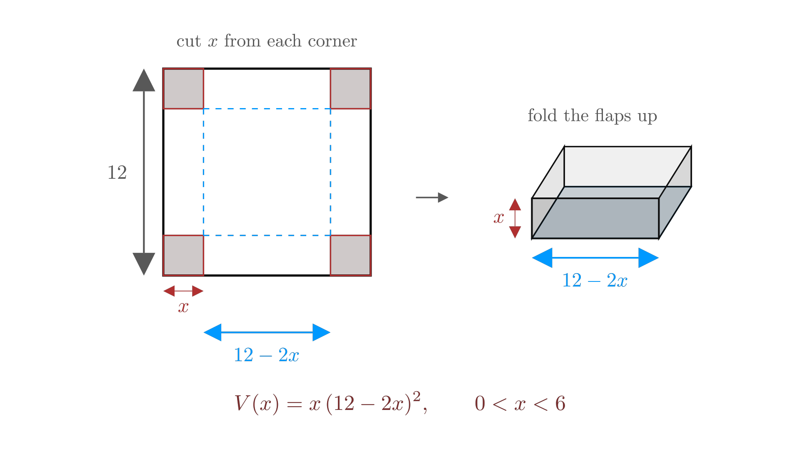
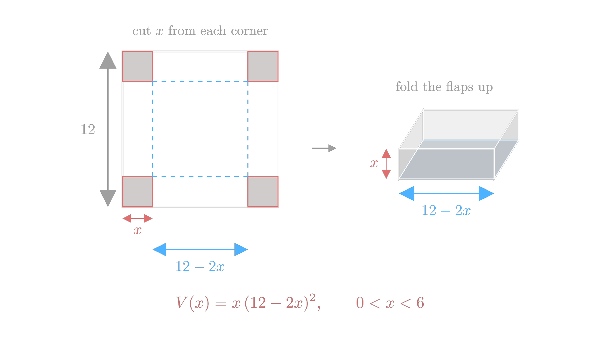
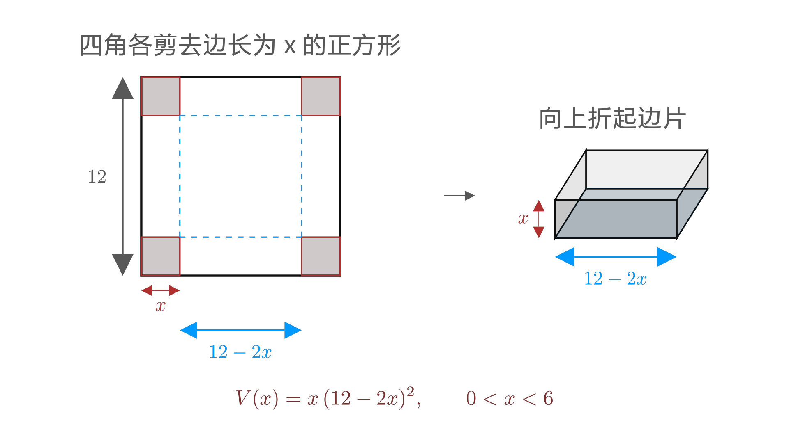
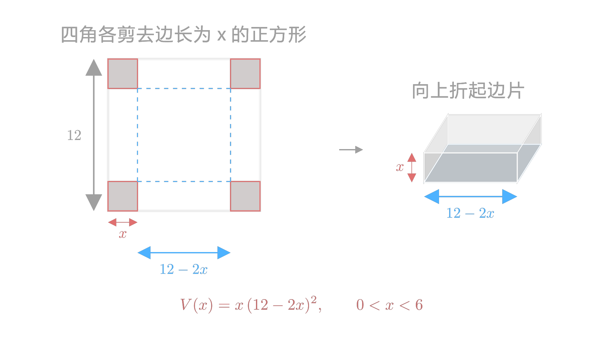
- Identify the quantity to optimize and the constraint in a word problem.
- Use the constraint to write the objective as a function of one variable.
- State the domain of the objective function from the physical context.
- Calculate the critical points of the objective on that domain.
- Explain which argument (Candidates Test, first or second derivative test) confirms the optimum.
- 在文字题中确定待优化的量与约束条件。
- 利用约束把目标写成单变量函数。
- 根据实际情境写出目标函数的定义域。
- 在该定义域上计算目标函数的临界点。
- 说明用哪种论证（候选点法、一阶或二阶导数判别法）确认最优值。
Optimization problems ask you to find the maximum or minimum value of a quantity subject to given constraints. They are among the most widely applied ideas in calculus. The key challenge is translating a word problem into a single-variable function that you can analyze with calculus.最优化（optimization）问题要求在给定约束（constraint）下，求某量的最大值或最小值。这是微积分中应用最广的主题之一。关键难点在于将文字题转化为单变量函数，再用微积分分析。
(1) Identify the quantity to be optimized. (2) Write it as a function of one or more variables. (3) Use a constraint equation to reduce to a single variable. (4) Find critical points. (5) Determine which critical point yields the desired extremum. (6) Answer the question that was asked.(1) 确定待优化的量。(2) 将其写成一个或多个变量的函数。(3) 利用约束方程化为单变量。(4) 求临界点。(5) 判断哪个临界点对应所求极值。(6) 回答题目所问的问题。
Common optimization contexts include maximizing area or volume given a constraint on perimeter or material, minimizing distance or cost, and finding dimensions that optimize a geometric quantity.常见的最优化情境包括：在周长或材料约束下最大化面积或体积、最小化距离或成本、求使某几何量最优的尺寸。
Worked Example: Largest area of a rectangle with perimeter $20$例题：周长为 $20$ 的矩形的最大面积
Worked Example: Largest open box from a 12-inch square sheet例题：用 12 英寸方形薄板做最大的无盖盒子
Write the domain next to the objective function before you differentiate, as in $A(x)=10x-x^2$, $0<x<10$. A closed domain means you compare endpoints and critical points; an open domain means you need a derivative test or a one-critical-point argument. Answer what was asked: if the question asks for dimensions, give every dimension with units, not only $x$.
求导之前先在目标函数旁写出定义域，如 $A(x)=10x-x^2$，$0<x<10$。定义域为闭区间时，比较端点与临界点；为开区间时，需要导数判别法或"唯一临界点"论证。回答题目所问：若问尺寸，就给出带单位的每个尺寸，而不只是 $x$。
Two positive numbers have sum $16$. Write their product as a function of one variable, give its domain, and find the largest product.两个正数之和为 $16$。把它们的积写成单变量函数，给出定义域，并求最大积。
$P(x)=x(16-x)$ with $0<x<16$. $P'(x)=16-2x=0$ gives $x=8$, and $P''(x)=-2<0$ with only one critical point, so the maximum product is $P(8)=64$.
$P(x)=x(16-x)$，$0<x<16$。$P'(x)=16-2x=0$ 得 $x=8$，且 $P''(x)=-2<0$、只有一个临界点，所以最大积为 $P(8)=64$。
A rectangle has area $36$. Write its perimeter as a function of its width $x$ and find the width that minimizes it.矩形面积为 $36$。把周长写成宽 $x$ 的函数，并求使周长最小的宽。
The length is $\frac{36}{x}$, so $P(x)=2x+\frac{72}{x}$ for $x>0$. $P'(x)=2-\frac{72}{x^2}=0$ gives $x=6$; $P''(x)=\frac{144}{x^3}>0$, so this is the minimum: a $6$ by $6$ square with perimeter $P(6)=24$.
长为 $\frac{36}{x}$，所以 $P(x)=2x+\frac{72}{x}$，$x>0$。$P'(x)=2-\frac{72}{x^2}=0$ 得 $x=6$；$P''(x)=\frac{144}{x^3}>0$，所以这是最小值：$6$ × $6$ 的正方形，周长 $P(6)=24$。
Why can the Candidates Test not be applied directly to $A(x)=10x-x^2$ on $0<x<10$, and what can you do instead?为什么不能直接对 $0<x<10$ 上的 $A(x)=10x-x^2$ 使用候选点法？可以改用什么方法？
The domain is open, so there are no endpoints to evaluate and the Extreme Value Theorem does not apply. Either use the derivative test ($A''(x)=-2<0$ at the only critical point $x=5$), or extend to $[0,10]$, where $A(0)=A(10)=0<A(5)=25$.
定义域是开区间，没有可计算的端点，极值定理也不适用。可用导数判别法（唯一临界点 $x=5$ 处 $A''(x)=-2<0$），或扩展到 $[0,10]$，此时 $A(0)=A(10)=0<A(5)=25$。
Solving Optimization Problems求解最优化问题
- Solve an optimization problem from setup to a justified optimum.
- Justify that a critical point gives an absolute maximum or minimum, not only a local one.
- Interpret the optimal value and where it occurs in the context of the problem, with units.
- Check that the answer lies in the domain and makes physical sense.
- Calculate minimum distances by minimizing the squared distance.
- 从建模到有论证的最优值，完整求解最优化问题。
- 论证临界点给出的是绝对最大值或最小值，而不仅是局部极值。
- 结合情境并带单位解释最优值及其取得位置。
- 检查答案位于定义域内且符合实际。
- 通过最小化距离的平方来求最短距离。
This topic extends the setup from Topic 5.10 into full solutions with interpretation. A complete solution does not just find the optimal value; it also explains what the value means in context.本主题将主题 5.10 的建模扩展为带有情境解释的完整解答。完整的解答不仅要求出最优值，还要解释其在情境中的含义。
Minimum and maximum values of a function take on specific meanings in applied contexts. After computing, always circle back to the original question and state your answer in terms of the scenario described.函数的最小值与最大值在应用情境中具有具体含义。计算完成后，务必回到原题，用情境的语言陈述结论。
A complete optimization solution must justify why the critical value is indeed a maximum or minimum. Use the First or Second Derivative Test, or the Candidates Test on a closed interval. Simply finding $f'(c) = 0$ is not sufficient: you must confirm the nature of the extremum.完整的最优化解答必须论证临界值确实为最大或最小。可使用一阶或二阶导数判别法，或在闭区间上使用候选点法。仅得到 $f'(c) = 0$ 不够：必须确认极值的类型。
Worked Example: Minimizing material for an open-top box例题：最小化无盖箱子的用料
Worked Example: Closest point on $y=\sqrt{x}$ to $(4,0)$例题：$y=\sqrt{x}$ 上距 $(4,0)$ 最近的点
A farmer has $600$ m of fence for three sides of a rectangular field; a straight river forms the fourth side. Find the largest possible area.农民有 $600$ 米围栏，用于围矩形田地的三边；第四边是一条笔直的河。求最大可能面积。
Let $x$ be each side perpendicular to the river; the side parallel to it is $600-2x$. $A(x)=x(600-2x)=600x-2x^2$ for $0<x<300$. $A'(x)=600-4x=0$ gives $x=150$, and $A''(x)=-4<0$ at this only critical point. Maximum area: $A(150)=150\cdot300=45000$ m², with sides $150$ m by $300$ m.
设垂直于河的每边为 $x$；平行于河的边为 $600-2x$。$A(x)=x(600-2x)=600x-2x^2$，$0<x<300$。$A'(x)=600-4x=0$ 得 $x=150$，且在这个唯一临界点处 $A''(x)=-4<0$。最大面积：$A(150)=150\cdot300=45000$ 平方米，尺寸为 $150$ 米 × $300$ 米。
Find the point on the line $y=2x+1$ closest to the origin.求直线 $y=2x+1$ 上距原点最近的点。
Squared distance: $S(x)=x^2+(2x+1)^2=5x^2+4x+1$. $S'(x)=10x+4=0$ gives $x=-0.4$, and $S''(x)=10>0$. Then $y=2(-0.4)+1=0.2$, so the point is $(-0.4,\,0.2)$, at distance $\sqrt{0.2}\approx0.447$.
距离的平方：$S(x)=x^2+(2x+1)^2=5x^2+4x+1$。$S'(x)=10x+4=0$ 得 $x=-0.4$，且 $S''(x)=10>0$。于是 $y=2(-0.4)+1=0.2$，所求点为 $(-0.4,\,0.2)$，距离为 $\sqrt{0.2}\approx0.447$。
In the open-box example above, why does $S''(x)>0$ for all $x>0$ prove an absolute (not only local) minimum at $x=4$?在上面的无盖箱子例题中，为什么对所有 $x>0$ 有 $S''(x)>0$ 就能证明 $x=4$ 处是绝对（而不仅是局部）最小值？
$S$ is concave up on the whole domain, so $S'$ is increasing there. With $S'(4)=0$, $S'<0$ for $x<4$ and $S'>0$ for $x>4$: $S$ decreases all the way to $x=4$ and increases after it, so no other $x$ gives a smaller value.
$S$ 在整个定义域上上凹，所以 $S'$ 在其上递增。由 $S'(4)=0$，$x<4$ 时 $S'<0$，$x>4$ 时 $S'>0$：$S$ 一直减小到 $x=4$，之后增大，所以没有其他 $x$ 能给出更小的值。
Exploring Behaviors of Implicit Relations探究隐式关系的行为
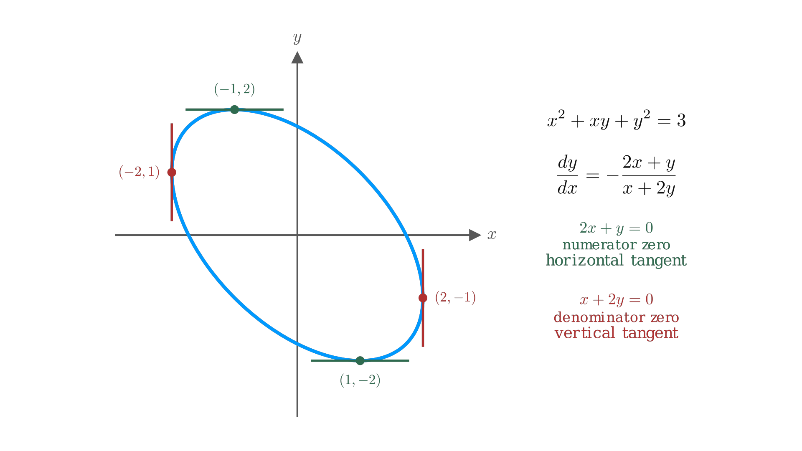
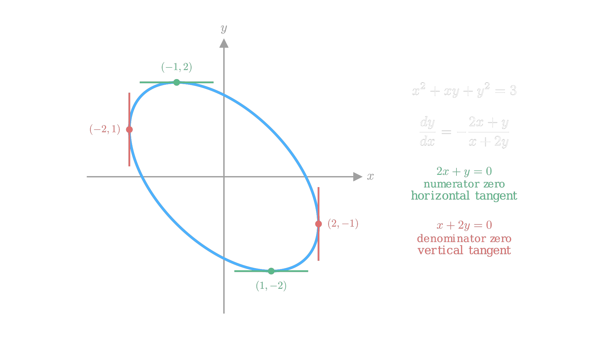
- Calculate $\frac{dy}{dx}$ for an implicitly defined relation.
- Find the points with horizontal tangents (numerator zero) and vertical tangents (denominator zero, numerator nonzero).
- Verify that each point found lies on the curve.
- Calculate $\frac{d^2y}{dx^2}$ implicitly and use it to determine concavity at a point.
- Apply the Second Derivative Test to classify a point with a horizontal tangent.
- 对隐式关系计算 $\frac{dy}{dx}$。
- 求水平切线点（分子为零）与铅直切线点（分母为零且分子非零）。
- 验证所求的每个点都在曲线上。
- 用隐式求导计算 $\frac{d^2y}{dx^2}$，并据此判定某点的凹凸性。
- 用二阶导数判别法对水平切线点分类。
The analytical techniques developed throughout this unit (finding critical points, determining increasing/decreasing behavior, analyzing concavity) extend naturally to implicitly defined functions. The key difference is that derivatives obtained via implicit differentiation are typically expressed in both $x$ and $y$.本单元发展的分析技巧（求临界点、判定递增/递减、分析凹凸性）可自然推广到隐式定义的函数。主要差异在于：通过隐式求导（implicit differentiation）得到的导数通常同时含 $x$ 与 $y$。
For an implicitly defined function, a critical point occurs where $\frac{dy}{dx} = 0$ or $\frac{dy}{dx}$ does not exist. Since $\frac{dy}{dx}$ is usually a fraction involving $x$ and $y$, set the numerator equal to zero (for $\frac{dy}{dx} = 0$) or analyze where the denominator equals zero (for $\frac{dy}{dx}$ DNE).对于隐式函数，临界点出现在 $\frac{dy}{dx} = 0$ 或 $\frac{dy}{dx}$ 不存在的位置。由于 $\frac{dy}{dx}$ 通常是含 $x$、$y$ 的分式，令分子为零（对应 $\frac{dy}{dx} = 0$），或分析分母为零的位置（对应 $\frac{dy}{dx}$ 不存在）。
Second Derivatives of Implicit Relations隐式关系的二阶导数
When computing $\frac{d^2y}{dx^2}$ for an implicit relation, the result typically involves $x$, $y$, and $\frac{dy}{dx}$. You may substitute the expression for $\frac{dy}{dx}$ to simplify. The second derivative can then be used to determine concavity and apply the Second Derivative Test, just as with explicit functions.对隐式关系计算 $\frac{d^2y}{dx^2}$ 时，结果通常含 $x$、$y$ 和 $\frac{dy}{dx}$。可将 $\frac{dy}{dx}$ 的表达式代入以化简。所得二阶导数可像处理显式函数那样，用于判定凹凸性并应用二阶导数判别法。
Apply appropriate mathematical rules or procedures, and provide reasons or rationales for solutions and conclusions. With implicit relations, precision in algebraic manipulation and careful chain rule application are essential.应用恰当的数学规则或步骤，并为解答与结论提供理由或依据。处理隐式关系时，精确的代数运算与谨慎应用链式法则（chain rule）至关重要。
Worked Example: Horizontal tangents to $x^2+xy+y^2=7$例题：$x^2+xy+y^2=7$ 的水平切线
Worked Example: Vertical tangents to $x^2+xy+y^2=7$例题：$x^2+xy+y^2=7$ 的铅直切线
For a horizontal or vertical tangent, show two checks in writing: the point satisfies the original equation, and the other part of the fraction for $\frac{dy}{dx}$ is not zero there. A point where numerator and denominator are both zero is not settled by the formula. For concavity at a point, substitute the point and the known value of $\frac{dy}{dx}$ into $\frac{d^2y}{dx^2}$ before simplifying.
求水平或铅直切线时，书面写出两项检查：该点满足原方程，且 $\frac{dy}{dx}$ 分式的另一部分在该点不为零。分子与分母同时为零的点无法由公式确定。判定某点凹凸性时，先把该点与已知的 $\frac{dy}{dx}$ 值代入 $\frac{d^2y}{dx^2}$，再化简。
For $x^2+y^2=25$, find $\frac{dy}{dx}$ and the points with horizontal and with vertical tangents.对 $x^2+y^2=25$，求 $\frac{dy}{dx}$ 以及水平切线点与铅直切线点。
$2x+2yy'=0$, so $\frac{dy}{dx}=-\frac{x}{y}$. Horizontal tangents where $x=0$: $(0,5)$ and $(0,-5)$. Vertical tangents where $y=0$: $(5,0)$ and $(-5,0)$.
$2x+2yy'=0$，所以 $\frac{dy}{dx}=-\frac{x}{y}$。$x=0$ 处为水平切线：$(0,5)$ 与 $(0,-5)$。$y=0$ 处为铅直切线：$(5,0)$ 与 $(-5,0)$。
For $xy=4$, find $\frac{d^2y}{dx^2}$ in terms of $x$ and $y$, and state the concavity in the first quadrant.对 $xy=4$，用 $x$ 与 $y$ 表示 $\frac{d^2y}{dx^2}$，并说明第一象限内的凹凸性。
$y+xy'=0$ gives $y'=-\frac{y}{x}$. Then $y''=-\frac{xy'-y}{x^2}=-\frac{-y-y}{x^2}=\frac{2y}{x^2}$. In the first quadrant $y>0$, so $y''>0$ and the curve is concave up. (Check: $y=\frac4x$ gives $y''=\frac{8}{x^3}=\frac{2y}{x^2}$.)
$y+xy'=0$ 得 $y'=-\frac{y}{x}$。于是 $y''=-\frac{xy'-y}{x^2}=-\frac{-y-y}{x^2}=\frac{2y}{x^2}$。第一象限内 $y>0$，所以 $y''>0$，曲线上凹。（验算：$y=\frac4x$ 给出 $y''=\frac{8}{x^3}=\frac{2y}{x^2}$。）
At the horizontal-tangent point $\left(\sqrt{7/3},\,-2\sqrt{7/3}\right)$ of $x^2+xy+y^2=7$, find $\frac{d^2y}{dx^2}$ and classify the point.在 $x^2+xy+y^2=7$ 的水平切线点 $\left(\sqrt{7/3},\,-2\sqrt{7/3}\right)$ 处，求 $\frac{d^2y}{dx^2}$ 并对该点分类。
Differentiate $2x+y+xy'+2yy'=0$ again: $2+2y'+xy''+2(y')^2+2yy''=0$. At this point $y'=0$, so $2+(x+2y)y''=0$ and $y''=\frac{-2}{x+2y}=\frac{-2}{-3x}=\frac{2}{3x}\approx0.436>0$. Since $y'=0$ and $y''>0$ there, the Second Derivative Test gives a local minimum of $y$ at this point.
再对 $2x+y+xy'+2yy'=0$ 求导：$2+2y'+xy''+2(y')^2+2yy''=0$。该点处 $y'=0$，所以 $2+(x+2y)y''=0$，$y''=\frac{-2}{x+2y}=\frac{-2}{-3x}=\frac{2}{3x}\approx0.436>0$。由于该处 $y'=0$ 且 $y''>0$，由二阶导数判别法，$y$ 在该点取得局部极小值。
Exam Strategy考试策略
Always refer to $f$, $f'$, and $f''$ by name. Never write "it" or "the function" when referencing a derivative. Ambiguity leaves a justification unclear. If the question names the function $g$, use $g$, $g'$, and $g''$ consistently.始终以名称指代 $f$、$f'$、$f''$。引用导数时切勿写"它"或"该函数"。歧义会让论证含糊不清。若题目将函数记为 $g$，则始终一致地使用 $g$、$g'$、$g''$。
If a question asks "Does $g$ have a relative minimum, maximum, or neither at $x = 10$? Justify your answer," begin your response by repeating the framework: "$g$ has a relative minimum at $x = 10$ because…"若题目问"$g$ 在 $x = 10$ 处是相对最小值、相对最大值还是两者皆非？说明理由"，作答应当沿用其句式开头："$g$ 在 $x = 10$ 处取得相对最小值，因为……"
When given a graph of $f'$, make arguments about $f$ based directly on the graph of the derivative. For example: "$f$ is concave up on $a < x < b$ because the graph of $f'$ is increasing on $a < x < b$." This is more reliable than trying to read the graph of $f$ itself.给定 $f'$ 的图像时，应直接基于导数的图像论证 $f$。例如："$f$ 在 $a < x < b$ 上上凹，因为 $f'$ 的图像在 $a < x < b$ 上递增。"这比试图读出 $f$ 自身的图像更可靠。
Before applying any theorem (MVT, EVT), explicitly confirm its hypotheses are satisfied. State continuity and differentiability conditions before drawing conclusions.应用任何定理（MVT、EVT）之前，明确确认其前提满足。在下结论前先陈述连续性与可导性条件。
Finding a critical point is not enough. You must justify that it yields a maximum or minimum using a derivative test or the Candidates Test. A complete answer includes the value and its context interpretation.仅找到临界点不够。必须用导数判别法或候选点法论证它对应最大或最小。完整解答还包括该值及其情境解释。
Common Mistakes常见错误
A very common error. Students read a graph of $f'$ and describe features as if they are features of $f$. For example, seeing that $f'$ is positive and concluding "$f$ is positive" instead of "$f$ is increasing."一个很常见的错误。学生读 $f'$ 的图像，却把特征当作 $f$ 的特征。例如，看到 $f'$ 为正就得出"$f$ 为正"而非"$f$ 递增"。
Vague language like "it is increasing" can be interpreted as referring to $f$ or $f'$. Always name the function explicitly."它递增"这类含糊措辞既可指 $f$ 也可指 $f'$。务必明确点名所指函数。
Confirm an extremum with the First Derivative Test (a sign change of $f'$) or the Second Derivative Test; $f'(c) = 0$ alone is insufficient.要用一阶导数判别法（$f'$ 变号）或二阶导数判别法来确认极值；仅有 $f'(c) = 0$ 不充分。
On a closed interval, always evaluate $f$ at both endpoints. The absolute extremum may occur at an endpoint, not at an interior critical point.在闭区间上务必计算 $f$ 在两端点的值。绝对极值可能出现在端点而非内部临界点。
Saying "the graph goes up" is a description, not a justification. A justification uses calculus reasoning: "$f$ is increasing because $f'(x) > 0$."说"图像上升"只是描述，并非论证。论证须使用微积分推理："$f$ 递增，因为 $f'(x) > 0$"。
You must confirm continuity on $[a,b]$ and differentiability on $(a,b)$ before applying the Mean Value Theorem. Skipping this step means your argument is incomplete.应用中值定理前，必须确认 $[a,b]$ 上连续、$(a,b)$ 上可导。跳过这一步意味着论证不完整。
Flashcards闪卡
Click a card to reveal the answer.点击卡片查看答案。
Unit Quiz单元测验
Test your understanding. Select the best answer for each question.检验掌握情况。每题选择最佳答案。
1. The Mean Value Theorem guarantees the existence of a value $c$ in $(a,b)$ such that $f'(c)$ equals the average rate of change over $[a,b]$. Which conditions must hold?1. 中值定理保证 $(a,b)$ 内存在某 $c$ 使 $f'(c)$ 等于 $[a,b]$ 上的平均变化率。需要哪些条件？
2. If $f'(c) = 0$ and $f''(c) = 0$, what can you conclude about $f$ at $x = c$?2. 若 $f'(c) = 0$ 且 $f''(c) = 0$，关于 $f$ 在 $x = c$ 处可得出什么结论？
3. On the interval $(-2, 5)$, $f'(x) < 0$ for all $x$. Which statement is true?3. 在 $(-2, 5)$ 上对所有 $x$ 有 $f'(x) < 0$。哪一项陈述正确？
4. A continuous function $f$ on $[1, 7]$ has critical points at $x = 3$ and $x = 5$. To find the absolute maximum of $f$, which values must you compare?4. 连续函数 $f$ 在 $[1, 7]$ 上在 $x = 3$ 和 $x = 5$ 处有临界点。要求 $f$ 的绝对最大值，必须比较哪些值？
5. The graph of $f'$ is increasing on $(a, b)$. What does this tell you about $f$?5. $f'$ 的图像在 $(a, b)$ 上递增。这告诉你关于 $f$ 的什么？
Readiness Checklist备考清单
Click each item you've mastered. Aim for 100% before exam day.点击已掌握的条目。考试前争取达到 100%。
- State and apply the Mean Value Theorem with both of its hypotheses陈述并应用中值定理，包含其两个前提
- State and apply the Extreme Value Theorem陈述并应用极值定理
- Identify critical points from $f'(x) = 0$ and $f'(x)$ undefined从 $f'(x) = 0$ 和 $f'(x)$ 未定义处识别临界点
- Determine intervals of increase / decrease from the sign of $f'$由 $f'$ 的符号判定递增 / 递减区间
- Apply the First Derivative Test to classify local extrema应用一阶导数判别法判定局部极值
- Use the Candidates Test to find absolute extrema on a closed interval用候选点法在闭区间上求绝对极值
- Determine concavity from the sign of $f''$由 $f''$ 的符号判定凹凸性
- Apply the Second Derivative Test and know when it is inconclusive应用二阶导数判别法，并清楚何时无法判定
- Locate and justify points of inflection定位并论证拐点
- Sketch $f$ from features of $f'$ and $f''$ (and vice versa)从 $f'$、$f''$ 的特征绘出 $f$（反之亦然）
- Read and interpret graphs of $f$, $f'$, $f''$ together同时阅读并解读 $f$、$f'$、$f''$ 的图像
- Set up an optimization problem from a word description根据文字描述建立最优化问题
- Solve optimization using an appropriate extremum test运用恰当的极值判别法求解最优化问题
- Apply extrema analysis to implicit relations将极值分析应用于隐式关系
- Write a full verbal justification referencing the relevant theorem/test写出完整的文字论证，引用相关定理或判别法
AP-Style Practice ProblemsAP 风格练习题
Exam-level practice for this unit: multiple-choice plus extended-response items in AP style. Go here after you've worked through the notes and the in-page quizzes above.本单元的考试级练习：多项选择题加 AP 风格的简答题。建议完成上面的笔记与页内测验后再前往。